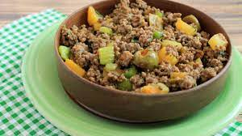

Picadillo

The picadillo is a traditional central american dish composed of a variety of boiled vegetables and meat.
Ingredients
Steps
- Prepare the Vegetables by cutting them in small cubes
- Start by adding water to a boiling pan and then add the cutted potatoes
- Add salt to the boiler and spices of your like
- After the potatoes/water mix gets some texture add ground meat
- Keep cokking until it dries out, lower the fire intensity if needed